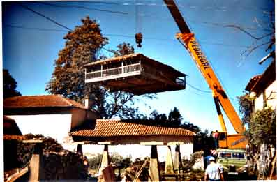
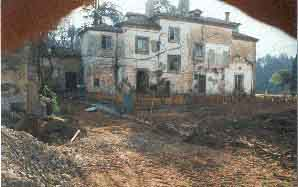
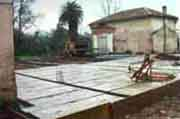
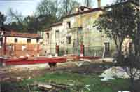
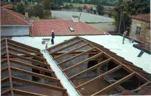

ENERO 2002
La obra se comienza en Enero de 2002 y se acaba en Diciembre del mismo año . Se parte de un estado semi ruinoso de la mayoría de los edificios y de un jardín en su grado máximo de descuido. Poco a poco se van quemando etapas. Primero salir del barro



ENERO 2002 HUBO QUE LIMPIAR EL BAMBÚ
Una vez superada esta fase, se comienzan a poner las bases del suelo y paredes, pero, sobre todo, ya no nos hundimos hasta la rodilla en el barro
 
FEBRERO 2002 ABRIL 2002
Y, para arriba, se van levantando paredes, vigas y al fin los techos, de ahí hasta el final aún queda un buen cacho, unas veces se ve a la obra avanzar. Otras sólo parecen correr los días...

JUNIO 2002